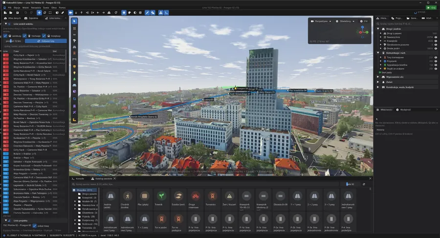
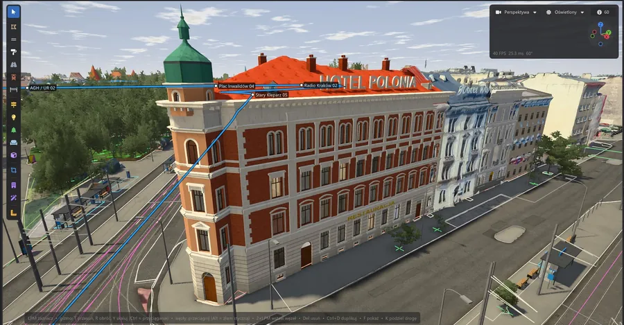
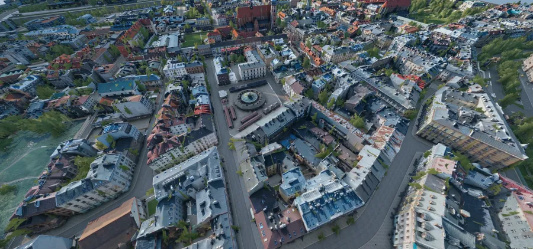
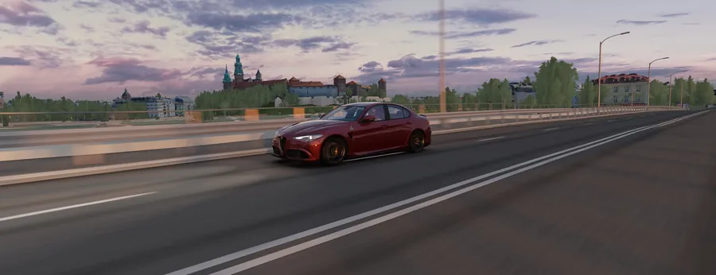
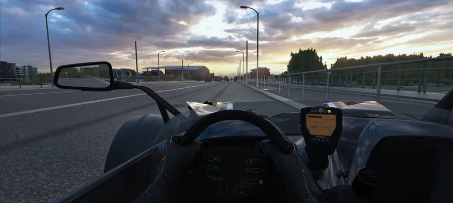
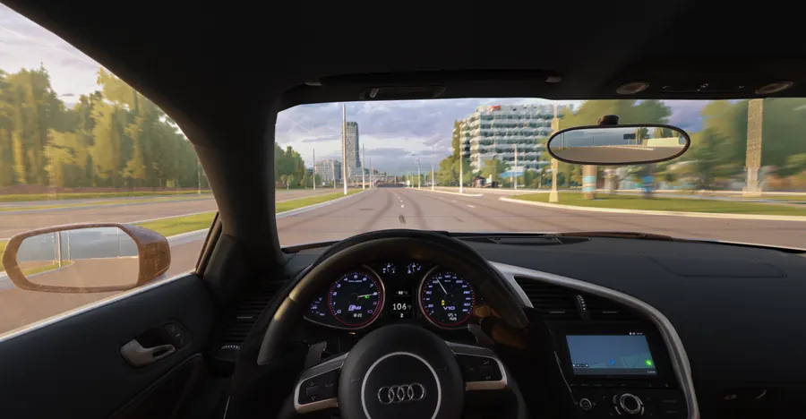

Filmy
#2 – Linia 152 (Pilotów – Przegon)
#1 – testowy przejazd Błonia / Al. 3 Maja
Zdjęcia

Edytor

Hotel Polonia

Kazimierz z lotu ptaka

Most nad Wisłą i Wawel

W stronę Centrum Kongresowego ICE

Dojazd do Ronda Mogilskiego
✕
‹
›